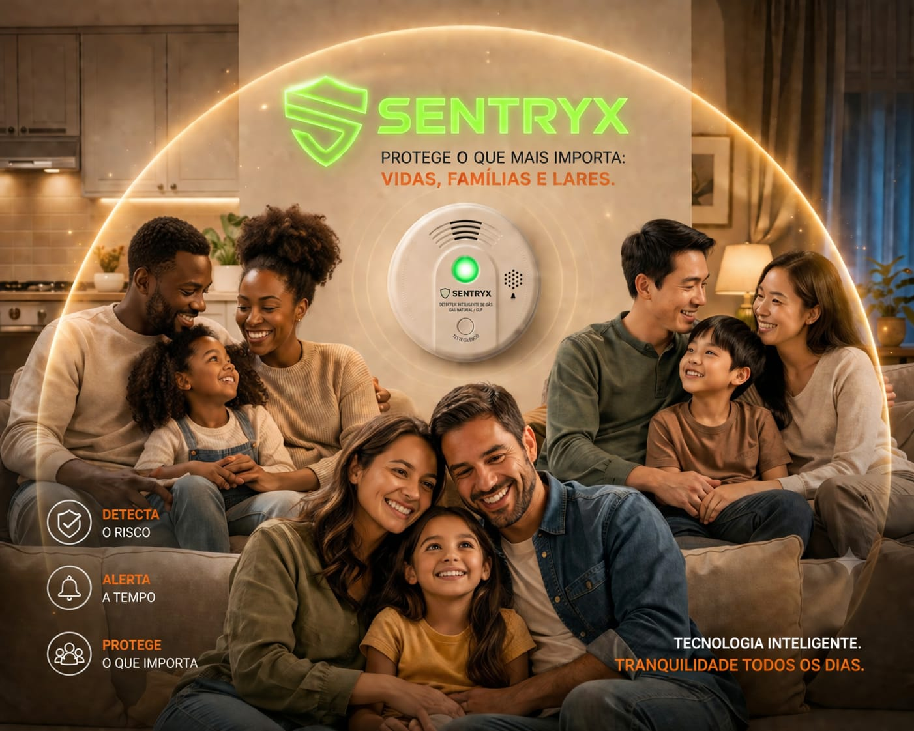
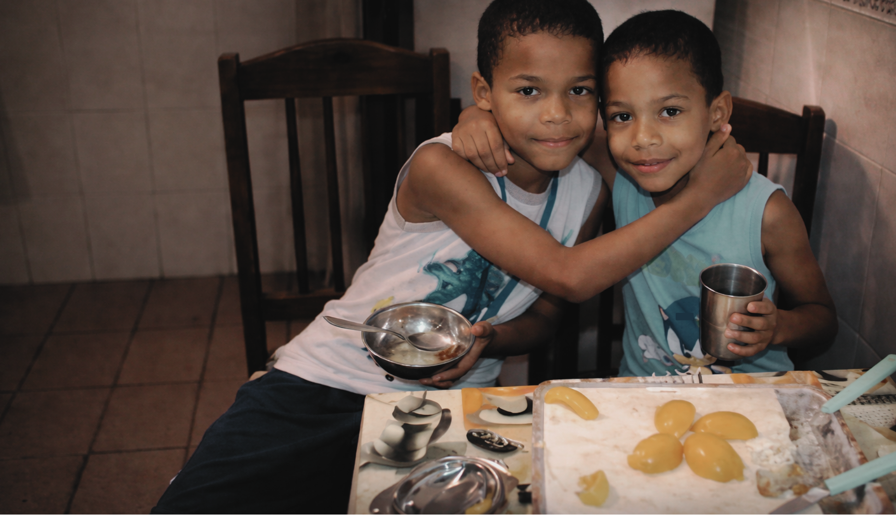

Missão
Desenvolver soluções inteligentes de prevenção contra vazamentos de gás, promovendo segurança, monitoramento e resposta rápida para proteger pessoas e ambientes.
A SENTRYX nasceu para transformar prevenção em proteção real, unindo tecnologia, responsabilidade e cuidado para combater vazamentos de gás e tragédias evitáveis.
A SENTRYX surgiu da necessidade de enfrentar um problema grave e silencioso: o alto índice de vazamentos de gás e as tragédias causadas por esse tipo de acidente.
Ao perceber que muitas famílias, comércios e cozinhas profissionais convivem diariamente com esse risco, decidimos desenvolver uma solução acessível, inteligente e eficiente.
Mais do que criar um produto, queremos oferecer segurança, tranquilidade e uma tecnologia que realmente faça diferença no cotidiano das pessoas.

A ideia da SENTRYX nasceu ao observar quantas tragédias ainda acontecem por conta de vazamentos de gás. Muitas dessas situações são silenciosas e passam despercebidas até que o dano já tenha sido causado.
Diante dessa realidade, entendemos que precisávamos criar uma solução que ajudasse a prevenir, alertar e proteger vidas de forma mais inteligente.

O produto SENTRYX foi pensado para atuar onde o perigo não pode ser visto. Seu propósito é monitorar ambientes, identificar riscos rapidamente e oferecer uma resposta preventiva antes que o pior aconteça.
Queremos levar segurança para residências, pequenos negócios e cozinhas profissionais, mostrando que a tecnologia pode ser uma aliada real na proteção de vidas.

A SENTRYX também nasce de uma motivação humana. Casos de famílias intoxicadas por vazamento de gás durante o sono mostram como esse perigo é silencioso, cruel e devastador.
Nossa persona representa exatamente essa realidade: proteger famílias, inclusive crianças, e impedir que tragédias evitáveis continuem acontecendo.
Os pilares que orientam cada decisão da SENTRYX.
Desenvolver soluções inteligentes de prevenção contra vazamentos de gás, promovendo segurança, monitoramento e resposta rápida para proteger pessoas e ambientes.
Ser referência em tecnologia preventiva e segurança inteligente, tornando ambientes residenciais e profissionais mais seguros e confiáveis.
Compromisso com a vida, inovação com propósito, responsabilidade, confiança, acessibilidade, cuidado com as pessoas e prevenção contínua.
Somos 6 pessoas unidas pelo mesmo propósito: criar tecnologia para proteger vidas.
Responsável por contribuir com a construção e evolução da solução SENTRYX.
Atua no projeto com foco em estratégia, inovação e desenvolvimento da proposta.
Contribui para transformar tecnologia em uma experiência mais acessível e segura.
Participa do desenvolvimento do projeto com foco em melhoria contínua e prevenção.
Ajuda a transformar ideias em soluções reais voltadas para proteção e cuidado.

Colabora com a SENTRYX unindo propósito, tecnologia e impacto social positivo.
Segurança não deve ser um luxo. Deve ser acessível, inteligente e presente no dia a dia.
Conheça nossa tecnologia